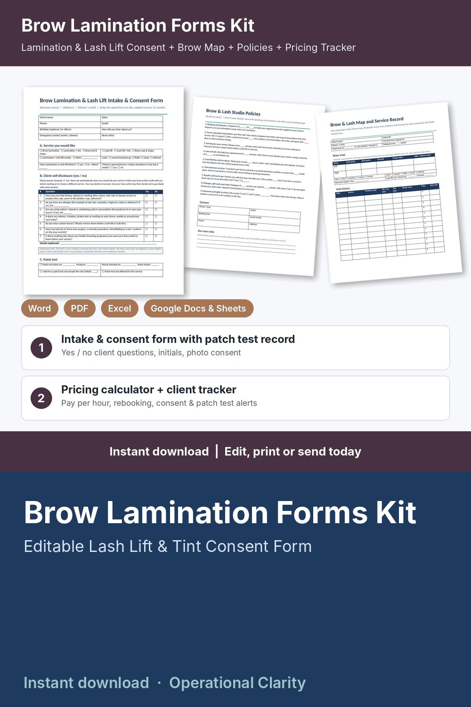

Brow Lamination Forms Kit

Get the consent form and patch test record on file, price every lamination and lift so it pays you, and know when each client is due back: a complete brow lamination and lash lift forms kit with a working pricing calculator and client tracker, not just a few printable pages.
WHAT'S INSIDE
- Brow Lamination & Lash Lift Intake & Consent Form (Word + PDF, 2 pages): client details, service wanted (lamination, tint, lash lift, wax, combos), simple yes / no client self-disclosure questions, patch test record or signed decline, 7 initialed acknowledgments (results vary, temporary redness or sensitivity, aftercare, patch test, studio policies agreed), consent and release, before / after photo consent, client and artist signatures, yearly review / update log.
- Brow & Lash Map and Service Record (Word + PDF, 2 pages): brow map (start, arch and tail for each brow, shape notes, sparse areas), hair type, look, tint shade, lash lift rod / shield size, visit history (products used, lift / set time and tint time you used, result notes, price, next visit), retail, deposits and balances, before / after photo log.
- Brow & Lash Studio Policies (Word + PDF): 9 ready-to-edit policies for deposits, forms and patch tests, arriving for your service, late arrivals, cancellations and no-shows, time between services, results and touch-ups, packages / gift cards / retail, payments and right to refuse, plus a blank page for your own aftercare instructions.
- Brow & Lash Service Menu & Price List (Word + PDF): editable menu with times and prices for brows, lashes, combos and add-ons.
- Brow Lamination Pricing Calculator & Client Tracker (Google Sheets / Excel, 6 tabs):
* Service Menu: minutes, product cost and your price for each lamination, lift, tint, wax and add-on; suggested price from your target hourly pay, overhead and card fees; what you keep and your real pay per hour; BELOW SUGGESTED flag
* Settings: target pay, monthly overhead, booked hours, card fees, deposit % and minimum, rounding, and after how many days your studio asks for a new patch test (your own policy)
* Clients: contact details, brow and lash notes, consent form date, patch test date or "not needed / waived" mark, visits, total spent, retail bought, next visit due and rebook alerts (REBOOK NOW / DUE SOON / BOOKED); no health information stored
* Appointments: service and add-on looked up from your menu, discounts, deposits, refunds, status, retail sold, days since last visit, balances and alerts (CONSENT MISSING / PATCH TEST MISSING / BALANCE DUE / DEPOSIT DUE / SEND FORMS / PATCH TEST DUE / UPCOMING / UPDATE STATUS)
* Dashboard: service revenue, retail sales, tips, product costs, card fees, what you keep, pay per hour worked, average ticket, no-show rate, deposits held, month-by-month and service-by-service tables, chart and a list of appointments that need attention
- START HERE guide (PDF)
HOW IT WORKS
1. Enter your target pay, overhead, card fees and patch test policy on Settings.
2. Add your services on the Service Menu tab, fix anything flagged BELOW SUGGESTED, and copy your prices into the printable menu.
3. Send new clients the policies and the Intake & Consent Form before their first visit; note the consent date and patch test date on Clients.
4. Log each booking and deposit; price, time and product cost fill in automatically.
5. After each visit, record payment, tip and retail sales, and watch the alerts for missing consent forms or patch tests, balances, deposits and clients due back.
Example data (9 services, 14 sample clients, 42 appointments) shows how it all connects; delete it and type your own. Yellow cells = type here, green cells = calculated.
FORMATS
- Word .docx (edit in Microsoft Word, Google Docs, Pages or LibreOffice) + PDF, US Letter
- Excel .xlsx made for Google Sheets (also works in Excel and LibreOffice; no macros)
This is an instant digital download, no physical item will be shipped.
Editable template, not legal advice. Have it reviewed by a local attorney and check your state board of cosmetology and local requirements (consent wording, patch tests, client records, which services your license covers) before you use it. The client questions are simple yes / no self-disclosures: information only, not a medical screening tool and not medical advice. No aftercare or medical advice is included; follow your product manufacturer's instructions.